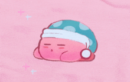
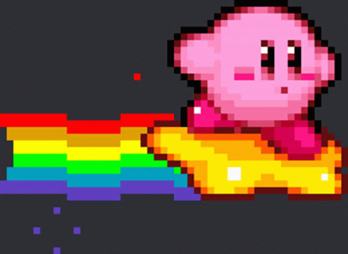
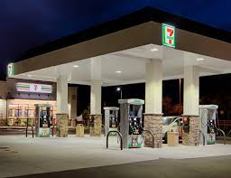
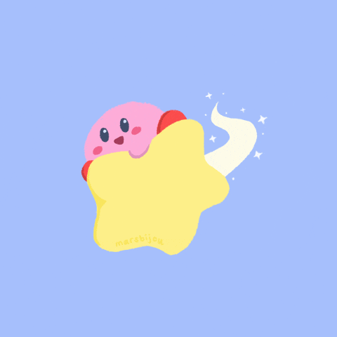

Welcome to the kirby website we have various things such as the kirby musuem and the lore of kirby, if you would like to see the musuem either scroll down or click the link named kirby musuem and you can do the same for the lore!
The kirby musuem?
The lore of kirby?
Click if you hate your computer
Kirby Cafe
The kirby muesuem




The lore of Kirby
Kirby, the pink puffball from the planet Popstar, is the hero of an expansive universe that is filled with color, joy, and adventure. He is often seen as a carefree and cheerful character, but beneath his innocent exterior lies a deep power. Kirby's primary ability is the Copy Ability, which allows him to absorb the abilities of his enemies and use them against others. This ability is central to his role as the protector of Dream Land, a peaceful region on Popstar. Though Kirby's world is often under threat from various antagonists, such as the nefarious King Dedede or the dark sorcerer Nightmare, Kirby always rises to the challenge. Despite his cute and unassuming appearance, he is known to be one of the most powerful characters in the Nintendo universe, capable of defeating foes that are far larger and more menacing than himself.
The lore of Kirby is not just about battles and confrontations but also about the exploration of various worlds and the relationships between its inhabitants. Dream Land, the most notable setting in the series, is home to a variety of whimsical and endearing creatures like the Waddle Dees, who assist Kirby in his adventures, and the various allies he meets along the way. However, Kirby’s enemies are often beings from other realms, such as Nightmare from the realm of dreams or Dark Matter from the void of space. These characters usually seek to disrupt the peace and harmony of Dream Land, and it is Kirby’s duty to stop them. His role as a protector of peace highlights the recurring theme of balance in the universe, where forces of good and evil are constantly in a delicate struggle.
As the series progresses, Kirby's adventures expand beyond Dream Land to different planets and even into the fabric of space and time. His foes become more complex, with some seeking to manipulate the very essence of the universe itself, such as Meta Knight, a powerful warrior who at times is an adversary, and other times, an ally. Despite the growing complexity of the lore, Kirby’s character remains grounded in his purity, innocence, and unwavering sense of justice. He fights for the safety of his friends and the preservation of peace in his world, embodying themes of courage, resilience, and the importance of protecting one’s home.
The lore of Kirby mirrors our society in numerous ways, primarily in its portrayal of the constant struggle between good and evil. Just as Kirby protects Dream Land from external threats, individuals in society often take on the role of defending their communities, whether from environmental, political, or economic forces. Kirby’s actions often result in restoring peace, symbolizing the ongoing efforts made by ordinary people to maintain the balance in their own lives. His battles against entities that threaten the collective good reflect how communities come together to stand against larger societal problems, such as injustice, corruption, or environmental destruction. The harmony of Dream Land, as represented by Kirby’s victories, mirrors how societies strive for peace and stability, even if it means overcoming enormous obstacles.
Moreover, Kirby’s ability to absorb and utilize the powers of his enemies serves as a metaphor for the adaptability and resilience required of individuals and societies in the face of adversity. In the same way that Kirby uses his enemies’ abilities to turn the tide in his favor, people and cultures throughout history have adapted, borrowed, and incorporated ideas, technologies, and practices from others to improve and evolve. This cultural exchange and the continuous process of adaptation reflect the dynamic nature of societies, which must adjust and innovate to face new challenges. Kirby’s innocence and simplicity in the face of overwhelming odds also serve as a reminder of the power of optimism and hope, qualities that are essential for overcoming societal challenges and finding solutions in the real world.
If you would like to here more about kirby lore you can watch the following video
Kirby Lore Video